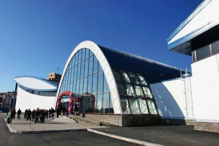

О федерации
Федерация фигурного катания на коньках Санкт-Петербурга является аккредитованной региональной спортивной федерацией, она входит в Федерацию фигурного катания на коньках России, которая, в свою очередь, входит в состав Международного Союза Конькобежцев (ISU), объединяющего такие виды спорта, как конькобежный спорт, шорт-трек, фигурное катание и синхронное фигурное катание.
В 2006 году в Петербурге была открыта Академия фигурного катания – современный спортивный комплекс с двумя катками стандартного олимпийского размера 30x60 метров и детским катком. В новом спортивном комплексе расположились Санкт-Петербургская СШОР по фигурному катанию на коньках и Федерация фигурного катания на коньках Санкт-Петербурга. Расположена Академия фигурного катания по адресу: Туполевская ул., 4, Санкт-Петербург, 197227.
Региональная общественная организация «Спортивная федерация фигурного катания на коньках Санкт-Петербурга» создана с целью развития фигурного катания на коньках в Санкт-Петербурге. Возглавляет её Антон Тариэльевич Сихарулидзе - заслуженный мастер спорта России, олимпийский чемпион 2002 года в парном катании, двукратный чемпион мира и Европы (в паре с Еленой Бережной). На эту должность он избран 17 декабря 2021 года. На заседании исполкома Федерации фигурного катания на коньках России 17 апреля 2023 года было принято решение о том, что олимпийский чемпион Антон Сихарулидзе будет временно исполнять полномочия главы ФФККР.
В руководящие органы Федерации фигурного катания на коньках России избраны наши представители: Антон Тариэльевич Сихарулидзе (и.о. президента ФФККР) и Игорь Борисович Бич (член Исполкома и Коллегии судей ФФККР).
Федерация прошла государственную аккредитацию (аккредитована Распоряжением Комитета по физической культуре и спорту от 07.12.2021 № 994-р «О государственной аккредитации региональных спортивных федераций Санкт‑Петербурга по видам спорта». Номер-код в соответствии с ВРВС 0500003611Я).
Устав Федерации.
В 2006 году в Петербурге была открыта Академия фигурного катания – современный спортивный комплекс с двумя катками стандартного олимпийского размера 30x60 метров и детским катком. В новом спортивном комплексе расположились Санкт-Петербургская СШОР по фигурному катанию на коньках и Федерация фигурного катания на коньках Санкт-Петербурга. Расположена Академия фигурного катания по адресу: Туполевская ул., 4, Санкт-Петербург, 197227.
Региональная общественная организация «Спортивная федерация фигурного катания на коньках Санкт-Петербурга» создана с целью развития фигурного катания на коньках в Санкт-Петербурге. Возглавляет её Антон Тариэльевич Сихарулидзе - заслуженный мастер спорта России, олимпийский чемпион 2002 года в парном катании, двукратный чемпион мира и Европы (в паре с Еленой Бережной). На эту должность он избран 17 декабря 2021 года. На заседании исполкома Федерации фигурного катания на коньках России 17 апреля 2023 года было принято решение о том, что олимпийский чемпион Антон Сихарулидзе будет временно исполнять полномочия главы ФФККР.
В руководящие органы Федерации фигурного катания на коньках России избраны наши представители: Антон Тариэльевич Сихарулидзе (и.о. президента ФФККР) и Игорь Борисович Бич (член Исполкома и Коллегии судей ФФККР).
Федерация прошла государственную аккредитацию (аккредитована Распоряжением Комитета по физической культуре и спорту от 07.12.2021 № 994-р «О государственной аккредитации региональных спортивных федераций Санкт‑Петербурга по видам спорта». Номер-код в соответствии с ВРВС 0500003611Я).
Устав Федерации.

Академия фигурного катания
Туполевская ул., 4, Санкт-Петербург, 197227